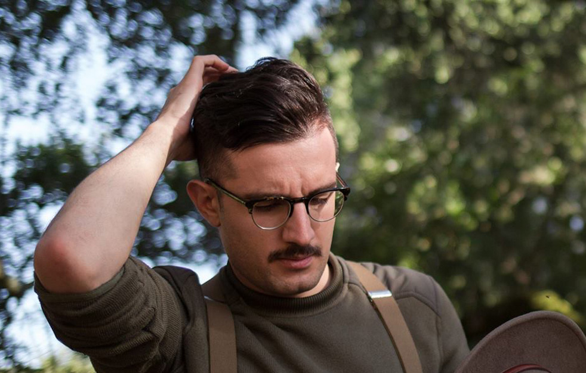
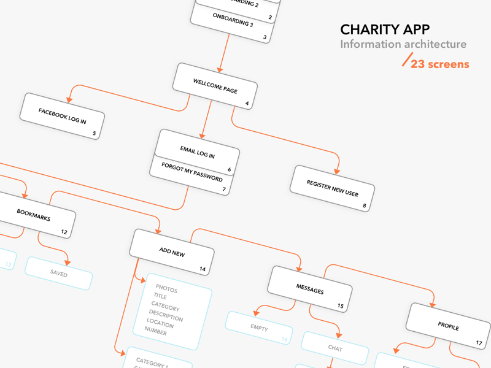
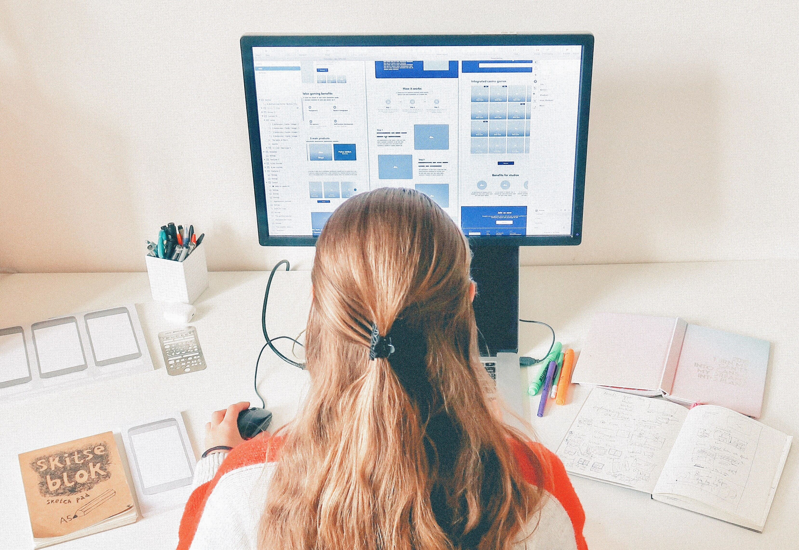
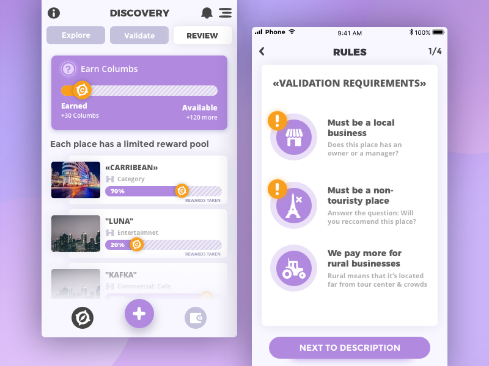

Stefan Vladimirov
Chief Creative at Swipes. Loves order and beauty. Always striving to achieve the
balance between function
and aesthetics.
Product Designer
Short intro
My name is Anfisa. I’m Ukrainian 🇺🇦 based in Prague, 🇨🇿 Here is what I do:
What do you do for a living?
I help businesses:
When did you find your passion for product design?
In 2013 in the hackathon at Pärnu, Estonia from Garage48 😋 I was studying Industrial design back then and had no clue about what is UX design. My friend asked me if I’d want to go one event (I also had no clue about what’s hackathon) to have some fun and design something. As I knew PSD and AI, I was the only one able to design and we had dozens on mentors, so that weekend for the first time I’ve explored how fun, quick and useful this process could be (comparing to industrial design). Since then, I couldn’t stop myself from learning all about it for the next 2 years…The final drop was made when I was invited to Georgia to actually teach UX design. In 4 months being a lecturer, I’ve sorted all the mess in my head and completely fell in love with design.
How long have you been doing product design?
5-6 years since that hackathon
Describe the beginning of your day
Actually, it’s a mess! (typical for all freelancers, but I’m working on fixing it 😄 ) Till now, I used to go to sleep really late and wake up at 9-10 am. The whole day I’d stay at home solely working. But at the end of the last year I started to feel a negative impact of such a lifestyle. This year I seriously took a challenge to completely revamp my day and currently learning to wake up at 6-7, starting to work in the mornings (instead of nights), later go to the gym and continue with the work strictly until 8pm. Wish me a luck at it 😉
What’s your workspace?
Nothing special. I don’t bother too much about my working place as when I’m in the “Flow” I don’t notice anything around. When I was freelancing and traveling, I was literally working on the petrol stations (and even in trucks) and nothing could stop me. Currently, I use an expandable (vertically) white table from IKEA and totally happy with it. My table is rather messy with different stationeries (pens, airpods, notebooks, sketchbooks, wireframing kits, etc). The only thing I hate (just as everyone else does) is cords! Have no clue to how hide them, so tend to ignore them for now. Maybe I should think of something to fix it soon 🤔
What’s your source of inspiration?
What works are you most proud of?
To be honest, I don’t believe that I have done something to be proud of. Every new project I start being so ignited and pumped, but when I complete it, I feel that I could have done so much better…and that’s my vicious circle. Besides, most of my work is UX based, so not too many fancy pixels, only gray-scale lo-fi testings. But just to make this post look nicer, here is a shot from of my startup project “Columbery”
What are the tools you use in your day to day life?
Sketch, Premiere pro, Apple Notes, Slack, Spotify.
Do you follow any set of principles for your work?
I don’t have fixed principles, but I do have values in work. And if those values are not being supported, I’d never continue working with the same people/clients. In design, I value:
What’s your favourite movie?
I love movies connecting future + technology. There is something captivating about them. For example: Ex machina, Arrival, Interstellar, Her.
What's your favourite book?
“Hooked” by Nir Eyal and “Sapiens” by Yuval Noah Harar
What advice would you give to people that start out with product design?
Start with self-exploration: realize your personal traits and values. Talk to people who you already worked with to ask their opinion. Ask your friends and family, brainstorm on the paper your own views. Try to understand what’s your personal strong power and UX design process? Who are the people you’d want to work with, what is your personal “design culture”? The mistake most creatives do is: “chasing money” for any cost. Accepting any client, do anything client says. The truth is, I’ve heard (way too many) stories from creatives who started to work for money and ended up being trapped in the wrong network of clients (or confused about the whole design process and it’s value). It’d become much harder later in the game to unravel this mess and start looking for completely different circle of clients and work.
Have you ever thought of empowering your creative community in any way, shape or form?
Always! That’s what brings me most of the joy in life. In fact, 50% of my time I spend on the content creation, communication, talks, events, networking and connecting with the like-minds. If I help someone - that makes me really excited (maybe it’s a drug 😅?). Not sure, but as you can understand, people is the main reason why I work.
Meet Anfisa on the Social Media
Dribbble Instagram YouTubeThank you for the interview, Anfisa. It brings so much insight on how did you develop as a creative and I think that it’s really inspiring.
Recommended reads